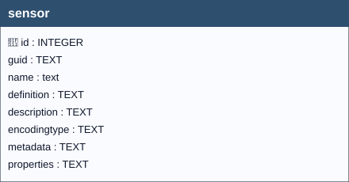

A Sensor is an entity that observes a property or phenomenon with the goal of producing an estimate of the value of the property. A Sensor may represent a piece of hardware, but a Sensor may also be a human or an algorithm implemented in software.
A Sensor entity in an OGC SensorThings API deployment can represent either a specific sensor instance, or a more generic sensor type. The distinction is generally quite clear from the Sensor metadata. Does the entity have detailed metadata that is specific to a sensor instance, like a serial number and calibration data, or is it used for many Datastreams attached to many different Things.

sensor| Name | Type | Constraints | Description |
|---|---|---|---|
id |
INTEGER |
PRIMARY KEY | A unique, read-only attribute that serves as an identifier for the entity. |
guid |
TEXT |
Universally unique identifier. | |
name |
TEXT |
NOT NULL | A property provides a label for Sensor entity, commonly a descriptive name. |
definition |
TEXT |
The URI linking the Thing to an external definition. Dereferencing this URI SHOULD result in a representation of the definition of the Thing. | |
description |
TEXT |
The description of the Sensor entity. | |
encodingtype |
TEXT |
The encoding type of the metadata property. If the metadata field is present, an encodingType must be specified. | |
metadata |
TEXT |
The detailed description of the Sensor or system. The metadata type is defined by encodingType. | |
properties |
TEXT |
mime type: ‘application/json’. A JSON Object containing user-annotated properties as key-value pairs. |
In this table, the primary key is the id field (integer, auto-incrementing).
There is also a text field named GUID, which stores a UUID (Universally Unique Identifier) compliant with RFC 4122.
Although GUID is not mandatory at the schema level (it is not declared NOT NULL), its functional requirement is enforced by two triggers:
Any foreign keys (FK) from other tables reference this table’s GUID field rather than the id field, ensuring stable and interoperable references across datasets and database instances.
datastream.guid_sensor → sensor.guid (ON UPDATE CASCADE, ON DELETE CASCADE)obsprocedure_sensor.guid_sensor → sensor.guid (ON UPDATE CASCADE, ON DELETE RESTRICT)For every trigger you will find:
sensorguid / sensorguidupdateWhen they run: AFTER INSERT / AFTER UPDATE OF guid
What they do: Assign GUID at insert when missing; prevent changes later.
If the check passes: Insert writes GUID; unchanged updates proceed.
If the check fails: On change, abort with: Cannot update guid column.